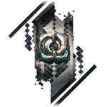

HooH
Aeon of EquilibriumLore
HooH adalah Aeon yang memimpin Path of Equilibrium (Jalur Keseimbangan), mewakili keseimbangan mutlak di seluruh alam semesta. THEY tidak memihak, tidak punya preferensi, tidak suka atau benci — segala sesuatu harus berada dalam keseimbangan sempurna, baik itu kehidupan dan kematian, kebahagiaan dan penderitaan, atau kekuatan dan kelemahan.
HooH adalah salah satu Aeon paling netral dan pasif. Mereka tidak pernah berinteraksi secara aktif dengan makhluk hidup atau Aeon lain kecuali ketika keseimbangan alam semesta terganggu secara ekstrem. Jika satu Path menjadi terlalu dominan (misalnya Destruction atau Abundance), HooH akan secara otomatis menimbang dengan memperkuat Path lawannya untuk mengembalikan keseimbangan.
HooH digambarkan sebagai entitas yang tidak memiliki kehendak pribadi — mereka adalah "timbangan kosmik" yang bekerja secara mekanis. Dalam Simulated Universe, HooH jarang muncul, tapi ketika muncul, mereka sering menyebabkan perubahan halus yang menyeimbangkan kekuatan (misalnya mengurangi kekuatan Aeon yang terlalu kuat atau memperkuat yang terlalu lemah).
Nama "HooH" adalah onomatopoeia simetris (seperti "hoo" dan "h" yang berlawanan tapi sama). Pronoun: THEY/THEM. Quote ikonik: "All things must balance. No more, no less." — Herta (mengomentari HooH).
Emanator
Emanator Equilibrium sangat jarang dan hampir tidak pernah muncul secara eksplisit, karena HooH tidak memilih atau memberkati siapa pun secara sengaja. Mereka hanya "menyeimbangkan" ketika diperlukan, sehingga Emanator mereka lebih seperti "alat" sementara daripada pengikut setia.
Tidak ada Emanator Equilibrium yang confirmed secara resmi dalam lore utama. Namun, ada spekulasi bahwa beberapa karakter atau entitas yang bertindak sangat netral (misalnya beberapa anggota Genius Society atau entitas kosmik tertentu) mungkin pernah menjadi "wadah sementara" keseimbangan HooH.
Path Equilibrium tidak memiliki organisasi pengikut seperti IPC atau The Family. Pengaruh HooH bersifat pasif dan otomatis — ketika keseimbangan terganggu, kekuatan mereka muncul tanpa perlu pemujaan atau doa.
Penampilan
HooH tidak memiliki bentuk fisik tetap — THEY muncul sebagai simbol timbangan kosmik simetris sempurna, sering berupa dua sisi hitam dan putih yang saling menyeimbangkan, dengan pusat netral abu-abu/perak. Bentuk ini melambangkan tidak adanya bias sama sekali.
Di Simulated Universe dan lore, HooH terlihat sebagai entitas abstrak tanpa wajah, hanya garis simetris dan pola yin-yang yang berputar perlahan. Aura mereka adalah ketiadaan warna (netral) dengan kilau perak samar, mencerminkan segala sesuatu tanpa mengubahnya.
Suara HooH (jika ada) adalah nada tunggal yang sempurna selaras, tanpa emosi, tanpa variasi — hanya keseimbangan mutlak yang terdengar.